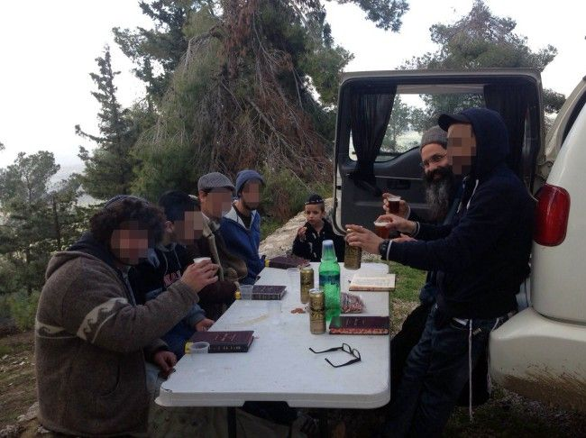

The Heart: The Key That Opens Everything
Rabbi Yosef (Seffi) Reshef and his wife, Oranit, have opened their home for the past ten years to young people who previously learned in yeshiva, yet now have abandoned their observance of Torah and mitzvos. A decade of warm, family-styled activities has brought many dozens of young Jews back into the fold. With the acquisition of a new facility, the Reshefs’ organization, “HaYechida,” is about to undergo a major upgrade. Are young Chabad dropouts different than dropouts in other religious sectors? This and other questions are answered in a fascinating discussion filled with moving life stories.
Translated by Michoel Leib Dobry

“We were positively overjoyed,” R’ Seffi said. “At first, we considered operating a ‘synagogue’ on the premises on weekdays and Shabbos to serve as the base for our activities with local young people. As soon as I received the keys to the building, I informed Anash members and other Chabad supporters in Tzfas and asked for their help in acquiring a Torah scroll and an Aron Kodesh.
“Within a few days, we had received a Seifer Torah on loan, but we still needed an ark to hold it. A carpenter had promised to build an Aron Kodesh for us, but the work would take a long time to complete. Therefore, I continued my search for a suitable alternative.
“One night, R’ Ro’i Diamant called me from Yeshivas ‘Chanoch Lenaar’ in Tzfas. He said that there was an unused Aron Kodesh sitting in their storeroom for years, and I had permission to take it. When I arrived to take the Aron, I was informed by the rosh yeshiva, Rabbi Eliezer Wilschansky, that this wasn’t your average Aron Kodesh. For many years, it had sat near the tomb of Rabbi Shimon bar Yochai in Miron and was subsequently removed from there after a new one was donated.
“After bringing the Aron into the shelter, we wrote a letter to the Rebbe. In his reply (Igros Kodesh, Vol. 13, pg. 242), the Rebbe wrote that he wanted us to open the facility on May 25. He also explained whom this institution is meant to serve, bringing the well-known Mishnah that the Sh’china dwells upon every gathering of ten Jews, even if they just sit together and especially if they learn together – a clear reference to our youngsters. I was truly amazed that the Rebbe had noted a secular date and I immediately checked the calendar. To my great astonishment, I discovered that it fell on the hilula of Rabbi Shimon bar Yochai.
“All of our activities are based on the teachings of Rabbi Shimon bar Yochai, explaining the inner depth of every Jew, no matter who he is. I felt that the holy Tanna was sending us a gift from Heaven. That same evening, we gathered all the youngsters to make a ‘L’chaim’ and a Chassidic farbrengen.”
ACTIVITIES THAT BEGAN AT THE CONCLUSION OF ‘SHEVA BRACHOS’
“HaYechida” is the name that Rabbi Seffi Reshef decided to call his organization, now in operation for nearly a decade. Since its founding, it’s gone through its fair share of changes. The number of young people participating in its programs exceeds one hundred, and while the nature of the activities changes from time to time, one thing remains constant – one family. The Reshefs have opened the door to their home each day for these youngsters searching for themselves, giving them a warm and loving embrace.
Over the years, many young people have returned to their spiritual roots, while many others have remained astray despite their firm faith in G-d. There are those who have made good resolutions in matters of Torah study and mitzvah observance that accompany them on a daily basis. The common bond is that they all know that when they come to the Reshefs’ home, day or night, they’ll find an attentive ear and an open refrigerator. Friends and acquaintances who have been exposed to the Reshefs’ activities describe this attribute as the secret to their success.
During the process of researching for this interview, we asked for more information about their inspiring activities. They are conducted with great simplicity and consistency, investing considerable effort and self-sacrifice to get these young people back on track and save them from the spiritual abyss.
When and how did these activities start taking shape?
It began with the conclusion of our ‘sheva brachos.’ One morning, as I was walking from my house to the shul in Tzfas, I met a young man along the way who had come from a Chabad home, although his outward appearance and conduct belied that fact. He spoke and acted in a most irresponsible manner. I went over to him and we began a very lively discussion. It wasn’t easy, but I wouldn’t relent. We talked and talked, and we eventually developed a close connection. After speaking for several hours, I told him that I was organizing a farbrengen that evening at my house and I asked him to bring all his friends.
The young man brought about ten friends who, like him, had been raised in a Chabad home, but had since abandoned a Chassidic lifestyle. They sat in my home for several hours throughout the night and the discussion flowed. I can safely say that for me, as a young baal t’shuva at the start of my own spiritual journey, it was very surprising to see a young man from a Chabad home reaching such a state. From that evening forward, we arranged to meet more regularly. We got together almost every evening at my home for an informal learning program that we called “Yeshivas Erev.”
You chose a shlichus that is rather atypical. Why?
Someone asked me recently: What do these activities give you? I smiled and replied that during the first year of my activities, I gained thirty-five kilos in weight from all the sweets I served at farbrengens…
In all seriousness, it’s quite clear that whenever one of these young men accepts a mitzvah upon himself or when someone decides to make a complete about-face and return to the path of his forefathers, it provides a great deal of satisfaction.
During that first year and in the years that followed, we brought mashpiim and other captivating figures who endured an experience or two in their own lives to sit and farbreng with these young people. The person who has helped me from our first year of operations to this very day is R’ Dan Ellstein, who saw for himself the importance of these activities.
WHAT’S MOST TOUCHING IS WHEN THEY CALL ME AND MY WIFE ‘ABA’ AND ‘IMA’
How did this develop from a sporadic program initiative to an organized and continuous series of activities?
It became firmly established by the end of the first year of our marriage. At first we decided to connect the young people to the community. Each week, we visited the local geriatric center and our youngsters would speak with the seniors, help them, and listen to their stories. Later, we even founded this as a yeshiva program called “Neirot L’Ha’ir,” which regrettably closed due to insufficient funding.
I still recall Shavuos night during our second year of operations. I had an idea to create an event that would be very meaningful for the teens. We managed to secure a significant financial contribution, and we informed the young people that anyone who completed the “Tikkun Leil Shavuos” would receive a monetary prize and certificate. There were those who responded with skepticism, however, even I was amazed by the level of success. They all sat together in our house – some of them with attention deficiency disorders, incapable of sitting in one place for more than two minutes. Yet, they succeeded over a period of several hours to complete the entire “Tikkun.” The day after Shavuos, as we held a ceremony to give out the certificates, one of the participants said something that has remained with me to this day: “The certificate is enough for me; I don’t need the money. This is the first time in my life that I got a certificate for something good that I have done.”
During the first year, we mainly learned through experience about the difficulties these youngsters endured after they left their standard learning programs and how seriously things can deteriorate when they have no one to listen to them and give them guidance. There was one young man who had become entangled with illegal substance abuse and loan sharks. We had to descend into the darkest depths to save his life. Over the ten years since, this has been our shlichus – mine and my wife’s. We hold a Torah class in the middle of the week and farbrengens on Thursday nights, but the main thing is the personal discussions we have with the youth at any hour of the day.
My wife Oranit is an attorney, and to our great regret, there are some young people who have been involved in various petty crimes. As a result, she has provided them with legal advice and guidance before the criminal justice system. What really touches our hearts is when these youngsters call me and wife “Aba” and “Ima.” I always tell parents that in spite of all their pain and frustration, they must leave the door open for their child – no matter what. When a child feels that his parents have given up on him and aren’t there for him, they drive him away from possibly ever coming back.
And what is about to change now that you have received this building?
The change will primarily be one of venue. While all the programs have thus far been run out of our house, the plan now is to found a youth club that will also operate as a synagogue on both weekdays and naturally on Shabbos and holidays as well. We will also build a covered seating area in the courtyard. Our main challenge is to give these youngsters a feeling that this is the place for them.
We also have plans to establish daily activities on the premises, including volunteer work within the community. We believe that when someone contributes to the community, he becomes a part of it. What’s most important is to restore among these youngsters the feeling of belonging that has been lost to them, so they shouldn’t go looking for it in other places.
NO MAGICAL SECRETS
What is the secret to your success? What really grabs these young people? How do you manage to bring them back while others have failed?
There are no magical secrets here. “As in water, face answers to face, so is the heart of a man to a man.” When a youngster experiences many frustrations in his life and feels for the first time that someone understands him, is prepared to listen to him, and even identifies with him without getting upset or flustered by his problems, he’s able to connect with you. Many of these young people have stopped believing in the adult world. They went through so many failures that their first association with the adult world is, “Here comes someone else who’s going to try and drive me into the ground.” When they encounter a different reaction, it has a positive influence.
In addition, we must love them. Even when one of them leaves Tzfas and then comes back for a visit, he always stops in to see me. Why? Because he feels that we are the place to get the love he needs. Our activities are very personal. When there’s a farbrengen or some other activity, I don’t publicize it among everyone with one announcement. Instead, I call each of them individually and ask them to come. “You have to come,” I say. “You’re important to me; it will be sad without you.” The youngster feels that he’s important to me and to the rest of the group.
There’s another matter – I’m not worried about speaking honestly and laying everything out on the table. I can also talk with them about the difficulties I have. This openness creates within them a sense of identification and connection. We don’t ignore problems or sweep them under the rug; rather, we look together for creative ways how to deal with them. In this manner, these young people feel that they can speak freely with us about the problems they have encountered.
Recently, I received a call from someone who had been with us in the past and had been in a very bad state. Despite everything, he eventually made significant improvements in his life. Today, he serves as a mashpia in a yeshiva. “You should just know,” he told me, “it’s all in your merit.” I’ll never forget the in-depth discussions we had, as they played a major role in his road back to Torah observance.
The young people also know that we are on their side and will come to their aid in any situation. I once got a call from one of them saying that his friend had just gone into the barbershop to ch”v shave off his beard. At that moment, I was extremely busy putting my children to bed. Nevertheless, I left everything, started up my car, and quickly made my way to the barbershop.
When I got there, I saw that he was already sitting in the chair wearing an apron as the barber prepared to cut his beard. “Have you gone crazy?” I yelled at him. “I won’t let you do this to yourself!” I put him in the car and spoke with him until the wee hours of the morning about the great importance of growing a beard. He hasn’t touched his beard to this day. Since he felt that I truly cared about him, he listened without getting angry.
There was another young man who today works in South America. He has a big business in baked goods and was one of the first who came to us. When he arrived in Tzfas for a visit, he naturally stopped in to see us. “You should know that there are several mitzvos that I observe,” he told us, “and one of them is Netilas Yadayim.”
He then proceeded to explain: Once when he was in our house, he came out of the bathroom and without washing his hands, he wanted to pick up our daughter. My wife noticed this and told him that he shouldn’t touch the baby with impure hands. “Wash your hands and then you can pick her up.” He said that he immediately washed his hands, and he’s been very stringent about observing this law ever since. He deeply felt how much his handwashing meant to my wife.
Of course, not everyone can act this way. This comes only after we display our love for them – and in great measure. These youngsters know that my wife and I will assist them at any moment without preconditions, and we’ll give them an attentive ear.
HOW CAN WE IDENTIFY A CHILD IN DANGER OF DROPPING OUT?
As I listen to you, I ask myself: Based on your experience, are there warning signs that every parent should know if his child is in danger of dropping out?
There are many signs, and I’ll give you just a few. First of all, however, we have to tell the truth: Not every child has an apparent reason. It is our responsibility as parents to be concerned for the welfare of our child – to raise him, educate him, and do the best we can for him, as our Rebbeim taught us. However, once he comes of age, who will be there for him as he continues on his life’s journey? That’s in the hands of Alm-ghty G-d.
There was one young man who used to come to us on a regular basis. He eventually became acquainted with a young woman from a non-observant home and the two got married. After a few years, it was the wife who got closer to Chabad and she brought her husband back into the fold. Once when we spoke about this at a farbrengen, the mashpia told him that the Creator found the way to bring him to where he did in order for his wife’s neshama to develop a hiskashrus with the Rebbe, Melech HaMoshiach. Since everything happens by Divine Providence, we don’t always see the reason.
Nevertheless, as parents, we bear a tremendous responsibility. There are children born to baalei t’shuva, whose parents exert pressure or use fear tactics. The father or the mother had previously experienced a totally different lifestyle, and when they became Torah observant, they wanted to delete all such images from their cache. Therefore, any action by the child that merely reminds the parents of those images simply horrifies them. When a parent acts out of fear, he responds with pressure and sometimes reproves the child for things that the child would never consider doing.
Regrettably, I meet children who relate to their Judaism as something practiced through crushing pressure, filled with sadness and without any fun or enjoyment. Even homes and families steeped in Chabad tradition have endured their own problems. Parents sometimes place before their children a high bar of expectations that they simply cannot meet, speaking in very lofty terms while their actions convey a message of weakness.
As someone who works and teaches in a Talmud Torah, I have spoken with these young people and have encountered serious problems with attention and concentration disorders. Through lack of proper treatment, these children suffer from failure after failure in class and among their peers. These failures produce frustrations that fester and grow, and then the parents don’t understand why one fine day, the child rebels against all the norms and looks for feelings of success out in the street.
IT’S NO PICNIC FOR A CHILD IN SPIRITUAL DECLINE
What can we possibly do to prevent a child from dropping out?
While there’s no magical formula for success, there definitely is something we can do. We must know how to listen and not recoil from difficult requests. We must create a warm and loving home that also speaks the language of feeling and emotion.
At the present time, I’m in the process of studying hydrotherapy. One of its main topics is getting the child involved in swimming, not to drag him along. Similarly, we find in education: Allow each child’s individual uniqueness to come through.
In addition, and most importantly, there’s the need to release the pressure. Every person is close and partial to himself. Before you try to change the child and bring him to a state of completion, first fix those attributes in need of improvement within yourselves. Just as you can cover up and excuse your own failures, by the same token, you can do the same with the child: Forgive him and above all, trust him.
Contrary to what many people think, when a child leaves the straight and narrow path for unchartered waters, it’s not easier for him. On the contrary, he has to deal with greater difficulties. To a certain extent, he escapes into a harsh, cruel, and uncooperative world. Most dropouts end up in the street for want of any alternative. They tried and pleaded for people to listen to them and believe them. However, when this didn’t happen, they were somewhat compelled to satisfy this need elsewhere. However, deep down inside, for anyone who received a Chassidic education, the flame of emuna continues to burn.
Several of these young people who came our way a few years ago called themselves “The Hashem Yisborach Gang.” Their objective was to bring justice and honesty to the streets. Think about it: They landed on the streets, throwing off the yoke of Torah and mitzvos. Yet, when they needed to select a name for the group, the first thing that entered their mind was Alm-ghty G-d. The community has to listen more to these youngsters, give them direction, and let them express the tremendous strengths they possess in the right places.
I say to parents: Keep your fingers on the pulse, constantly take an interest in what’s happening with your child in school or yeshiva, and keep track of his overall conduct. If he has a question or if you see something amiss in his behavior, deal with it, relate to it, don’t ignore the problem, and don’t get into a panic. The responsibility is solely the parents’. I hear parents who blame the Talmud Torah, the kindergarten, and some even blame the daycare center. While I don’t say that everyone’s perfect, it would be far better to refrain from assigning blame. No one will do the job for you; everything starts and ends on the home front.
AT FIRST, I ONLY BELIEVED; NOW I KNOW THAT THERE’S A CHANCE
Speaking in all frankness, do you think that each of these youngsters has a chance to return to the fold?
If you would have asked me this question when we started our activities, I would have told you that I believe so. Now, ten years later, I can tell you that I know so. There’s no lack of stories.
One young man who had regularly participated in our programs has not only returned to the path of his forefathers, he also became a mashpia. Who would have believed this based on how we found him and where he has managed to reach? When he was with us, he was still a youngster at the start of his spiritual journey. A bachur who now serves as principal in his former school told me that when he was still a young boy, he knew that when he was angry, no one got anywhere near him. Today, this same bachur runs a municipal educational program for school dropouts.
There was another young man who came to my wife and asked her for legal advice. My wife declined on the grounds that she does not specialize in criminal law. However, the young man would not relent, and he even promised that he would help her get more business for her legal services by bringing her all his friends who had gotten into trouble with the law. He eventually started coming to all the farbrengens and the Chassidic message began to penetrate his heart. While he didn’t become a full-fledged Chabadnik again with the external garb, he did manage to get a hold of himself. Today, he is in his second year of studying medicine at the Technion in Haifa. He came to visit us during the Pesach holiday, and he told us that he puts on tefillin and observes Shabbos.
THE REBBE DOES NOT FORSAKE THE CHABAD DROPOUTS
Is there a difference between dropouts from Chabad homes and those from other sectors?
It isn’t a pleasant thing to say, but the difference is quite dramatic. Over the years, many dropouts have passed our way, including those from ultra-Orthodox households who did not receive a Chabad education. The difference is staggering. Even if he reaches the lowest ebb, a Chabad dropout will always have the Rebbe…
There was a young dropout who recently participated in one of our weekly Shabbos farbrengens. The long arm of the law had finally caught up with him and he had just finished serving a term of several months behind bars. He shared his feelings with us, stating that he knows that he was sent there by Divine Providence to fulfill a shlichus with the other prison inmates. I listened to him and was inspired… Only someone who received a Chabad education could speak that way.
I also spoke with another young man who had recently made a trip to the United States. While he had abandoned much of his previous Torah observant lifestyle, his kippah remained on his head. During his visit, he went into a place of leisure that was not appropriate for a Jew wearing a yarmulke. One of the employees, who later identified himself as a former member of one of the leading Chassidic communities in the United States, went up to him and asked what he was doing there wearing a kippah. “Take it off,” he demanded, but the young man replied, “Never. The fact that I’m a sinner doesn’t mean that I don’t have a G-d.” This Chassidic dropout was not expecting such a response and they later sat together for two hours and learned Chassidus… Today, this young man keeps Shabbos.
You see bachurim who wear earrings and nose rings, yet they sing niggunim with genuine fervor as tears fill their eyes. There are those who come with me on mivtza Tefillin or Dalet Minim Campaign activities and give Jews the opportunity to fulfill these precious mitzvos in a way that no Litvishe dropout could ever do.
It makes no difference how far a former Chabad student may have drifted; the Rebbe will always be present in his life in a most active way. Most Chabad dropouts have no feelings of hatred towards G-d or the path of Torah. They have a tremendous and exceptional sense of love for the Rebbe, and it eventually leads them back to the right track. Therefore, the percentage of Chabad youngsters who find their way back is immeasurably larger.
Unfortunately, we have thus far borne the entire financial burden for our activities on our own. The Tzfas municipality and other government organizations have been taking their time, to put it mildly, to arrange budgetary allocations for our programs. In the meantime, our activities continue to grow. We urgently need contributions, and the Rebbe promised in his letter to us that he blesses all those who support our activities. It sounds like an excellent deal to make with the Rebbe. For further information, please call +972-52-578-7709. Readers are invited to make a donation via direct deposit into Israel Postal Bank Account No. 8191287 – “Neirot L’Ha’ir.”
Nosson Avrohom. "The Heart: The Key That Opens Everything." Beis Moshiach, no. 1098 (December 20, 2017).